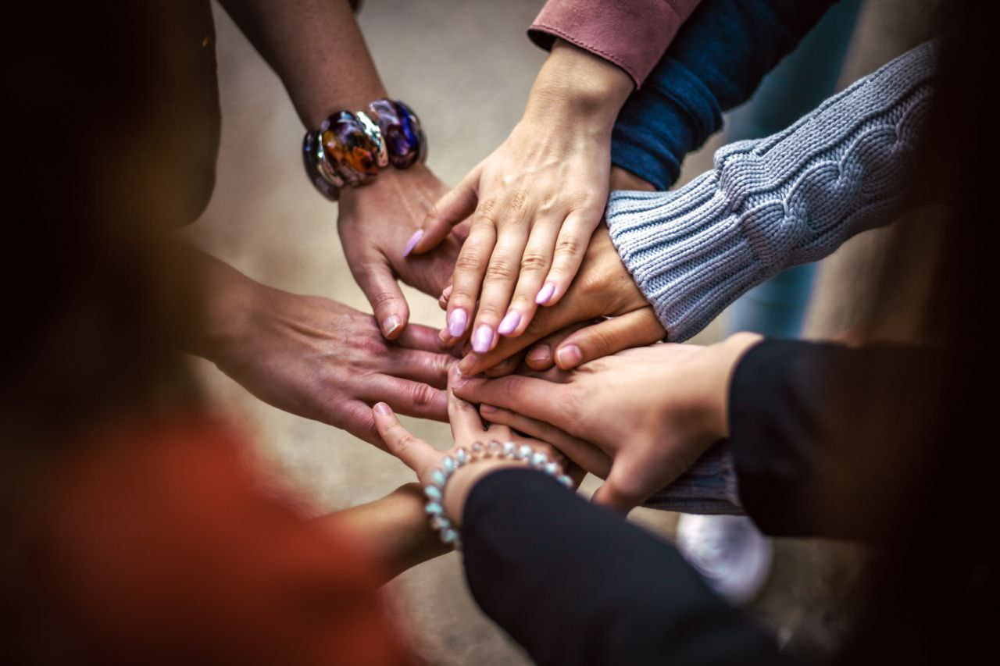

Soluciones que inspiran, historias que transforman
Conectando Realidades se propone como un espacio que prioriza la esperanza, la empatía, el análisis profundo y la inspiración, sin perder de vista la objetividad periodística.
Nuestro compromiso es proporcionar un periodismo responsable, orientado a conectar problemas reales con soluciones tangibles, fomentando un diálogo constructivo y un cambio positivo en la sociedad.
Somos un medio encargado de visibilizar los desafíos de las sociedades actuales a través de una mirada pro-positiva, destacando historias y proyectos que impulsan soluciones efectivas.
Queremos informar y empoderar a nuestra audiencia con contenido que inspire a la acción, promoviendo el desarrollo sostenible, la equidad y la justicia social.
Ser un cibermedio referente en periodismo de soluciones, reconocido por su enfoque innovador y su capacidad para inspirar a las audiencias a convertirse en agentes de cambio.
Aspiramos a construir un puente entre los problemas complejos de la realidad y las soluciones posibles, contribuyendo a una sociedad más informada, consciente y proactiva.
Nuestras historias están orientadas a fomentar un impacto positivo en la sociedad.
Buscamos nuevas formas de contar historias que motiven la acción y el cambio.
Nos esforzamos por entender las realidades de las personas y comunidades que reportamos, dándoles voz desde el periodismo.
Promovemos soluciones que respeten el medio ambiente y contribuyan a un futuro sostenible